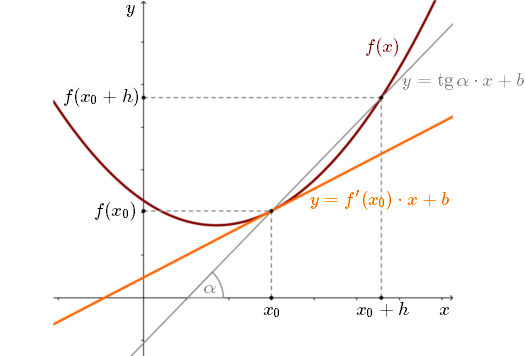

Pochodne
1.
Definicja pochodnej funkcji
Definicja pochodnej funkcji
Załóżmy, że mamy daną funkcję \(f(x)\) oraz argument
\(x_0\), w otoczeniu którego funkcja \(f(x)\) jest określona.
Pochodną funkcji \(f(x)\) w punkcie \(x_0\) oznaczamy symbolem: \[f'(x_0)\] i definiujemy jako granicę: \[f'(x_0)=\lim_{x \to x_0} \frac{f(x)-f(x_0)}{x-x_0}\] Możemy również zdefiniować pochodną jako granicę: \[f'(x_0)=\lim_{h \to 0} \frac{f(x_0+h)-f(x_0)}{h}\] Przez dwa punkty funkcji \(f(x)\) (dla argumentów \(x_0\) oraz \(x_0+h\))
poprowadziliśmy prostą \(y\) daną wzorem: \[y=\operatorname{tg} \alpha \cdot x+b\] gdzie z definicji
tangensa w trójkącie prostokątnym mamy: \[\operatorname{tg} \alpha =\frac{f(x_0+h)-f(x_0)}{h}\] Czyli na
Rys. 1 iloraz różnicowy, to po prostu współczynnik kierunkowy szarej prostej!
Przez dwa punkty funkcji \(f(x)\) (dla argumentów \(x_0\) oraz \(x_0+h\))
poprowadziliśmy prostą \(y\) daną wzorem: \[y=\operatorname{tg} \alpha \cdot x+b\] gdzie z definicji
tangensa w trójkącie prostokątnym mamy: \[\operatorname{tg} \alpha =\frac{f(x_0+h)-f(x_0)}{h}\] Czyli na
Rys. 1 iloraz różnicowy, to po prostu współczynnik kierunkowy szarej prostej!
Możemy wręcz napisać, że: \[\lim_{h \to 0} \operatorname{tg} \alpha = f'(x_0)\] Pochodna pokazuje nam jak funkcja zmienia się w danym punkcie. Dokładniej:
Pochodną funkcji \(f(x)\) w punkcie \(x_0\) oznaczamy symbolem: \[f'(x_0)\] i definiujemy jako granicę: \[f'(x_0)=\lim_{x \to x_0} \frac{f(x)-f(x_0)}{x-x_0}\] Możemy również zdefiniować pochodną jako granicę: \[f'(x_0)=\lim_{h \to 0} \frac{f(x_0+h)-f(x_0)}{h}\]
Obie definicje są równoważne i w zależności od
podręcznika, możesz spotkać się z pierwszą lub drugą.
Dalej będę posługiwał się głównie drugą definicją, ponieważ jest częściej spotykana i trochę prostsza w zastosowaniu.
Dalej będę posługiwał się głównie drugą definicją, ponieważ jest częściej spotykana i trochę prostsza w zastosowaniu.
Ułamek z którego liczymy granicę: \(\frac{f(x_0+h)-f(x_0)}{h}\) nazywamy
ilorazem różnicowym.
Iloraz różnicowy - to stosunek przyrostu wartości funkcji do przyrostu argumentu funkcji.
Iloraz różnicowy - to stosunek przyrostu wartości funkcji do przyrostu argumentu funkcji.
Przez dwa punkty funkcji \(f(x)\) (dla argumentów \(x_0\) oraz \(x_0+h\))
poprowadziliśmy prostą \(y\) daną wzorem: \[y=\operatorname{tg} \alpha \cdot x+b\] gdzie z definicji
tangensa w trójkącie prostokątnym mamy: \[\operatorname{tg} \alpha =\frac{f(x_0+h)-f(x_0)}{h}\] Czyli na
Rys. 1 iloraz różnicowy, to po prostu współczynnik kierunkowy szarej prostej! Interpretacja geometryczna pochodnej
Pochodna funkcji \(f(x)\) w punkcie \(x_0\) - to współczynnik kierunkowy prostej stycznej do \(f(x)\) w punkcie \(x_0\).  Zauważmy, że jeśli \(h\to 0\), to szara prosta zbiega do pomarańczowej prostej.Możemy wręcz napisać, że: \[\lim_{h \to 0} \operatorname{tg} \alpha = f'(x_0)\] Pochodna pokazuje nam jak funkcja zmienia się w danym punkcie. Dokładniej:
- Jeśli \(f'(x_0)\gt 0\), to funkcja \(f(x)\) rośnie w punkcie \(x_0\).
- Jeśli \(f'(x_0)= 0\), to funkcja \(f(x)\) jest stała w punkcie \(x_0\).
- Jeśli \(f'(x_0)\lt 0\), to funkcja \(f(x)\) maleje w punkcie \(x_0\).
Sposoby oznaczania pochodnych
Pochodną funkcji \(f(x)\) zapisujemy najczęściej tak: \[f'(x)\] Czasami można spotkać się z innymi oznaczeniami:- \(\frac{df(x)}{dx}\) (oznaczenie wprowadzone przez Leibniza)
- \(f'(x)\) (oznaczenie wprowadzone przez Lagrange'a)
- \(Df(x)\) (oznaczenie wprowadzone przez Cauchy'ego)
- \(\frac{dy}{dx}\) (oznaczenie wprowadzone przez Leibniza)
- \(y'\) (oznaczenie wprowadzone przez Lagrange'a)
- \(Dy\) (oznaczenie wprowadzone przez Cauchy'ego)
Pochodne funkcji można liczyć bezpośrednio z definicji, ale dużo łatwiej jest
korzystać z gotowych wzorów. Nie musimy wtedy
liczyć granicy ilorazu różnicowego, tylko stosujemy proste wzory i reguły liczenia pochodnych.
W poniższych przykładach obliczymy pochodne bezpośrednio z definicji.
Oblicz pochodną funkcji \(f(x) = x^2\) w punkcie \(x_0 = 2\).
Liczymy wartość pochodnej w punkcie \(x_0\) korzystając z definicji: \[
\begin{split} f'(2)&=\lim_{h \to 0} \frac{f(2+h)-f(2)}{h} =\lim_{h \to 0} \frac{(2+h)^2-2^2}{h}
=\lim_{h \to 0} \frac{4+4h+h^2-4}{h}\\[6pt] &=\lim_{h \to 0} \frac{4h+h^2}{h} =\lim_{h \to 0}
\frac{h(4+h)}{h} =\lim_{h \to 0} (4+h) = 4 \end{split} \] Możemy również policzyć z definicji
wzór ogólny pochodnej dla tej funkcji:
\[ \begin{split} f'(x)&=\lim_{h \to 0} \frac{f(x+h)-f(x)}{h} =\lim_{h \to 0} \frac{(x+h)^2-x^2}{h} =\lim_{h \to 0} \frac{x^2+2hx+h^2-x^2}{h}\\[6pt] &=\lim_{h \to 0} \frac{2hx+h^2}{h} =\lim_{h \to 0} \frac{h(2x+h)}{h} =\lim_{h \to 0} (2x+h) = 2x \end{split} \] Czyli ostatecznie: \[f'(x)=2x\] Można też napisać równoważnie: \[(x^2)'=2x\] Korzystając z tak wyliczonego wzoru możemy teraz obliczyć wartość pochodnej w dowolnym punkcie, np.: \[ f'(2)=2\cdot 2=4\\[6pt] f'(0)=2\cdot 0=0\\[6pt] f'(-5)=2\cdot (-5)=-10\\[6pt] \] Praktycznie zawsze opłaca się najpierw policzyć pochodną funkcji (zwłaszcza, że mamy do dyspozycji gotowe wzory na liczenie pochodnych), a dopiero potem wyznaczyć jej wartość w konkretnym punkcie.
\[ \begin{split} f'(x)&=\lim_{h \to 0} \frac{f(x+h)-f(x)}{h} =\lim_{h \to 0} \frac{(x+h)^2-x^2}{h} =\lim_{h \to 0} \frac{x^2+2hx+h^2-x^2}{h}\\[6pt] &=\lim_{h \to 0} \frac{2hx+h^2}{h} =\lim_{h \to 0} \frac{h(2x+h)}{h} =\lim_{h \to 0} (2x+h) = 2x \end{split} \] Czyli ostatecznie: \[f'(x)=2x\] Można też napisać równoważnie: \[(x^2)'=2x\] Korzystając z tak wyliczonego wzoru możemy teraz obliczyć wartość pochodnej w dowolnym punkcie, np.: \[ f'(2)=2\cdot 2=4\\[6pt] f'(0)=2\cdot 0=0\\[6pt] f'(-5)=2\cdot (-5)=-10\\[6pt] \] Praktycznie zawsze opłaca się najpierw policzyć pochodną funkcji (zwłaszcza, że mamy do dyspozycji gotowe wzory na liczenie pochodnych), a dopiero potem wyznaczyć jej wartość w konkretnym punkcie.
Oblicz pochodną funkcji \(f(x) = x^3 - 2x\).
Liczymy pochodną korzystając z definicji: \[ \begin{split} f'(x)&=\lim_{h \to 0}
\frac{f(x+h)-f(x)}{h} =\lim_{h \to 0} \frac{\Bigl((x+h)^3-2(x+h)\Bigl)-(x^3-2x)}{h}=\\[6pt]
&=\lim_{h \to 0} \frac{x^3+3x^2h+3xh^2+h^3-2x-2h-x^3+2x}{h} =\lim_{h \to 0}
\frac{3x^2h+3xh^2+h^3-2h}{h}=\\[6pt] &=\lim_{h \to 0} \frac{h(3x^2+3xh+h^2-2)}{h} =\lim_{h \to
0} (3x^2+3xh+h^2-2)=3x^2-2 \end{split} \] Zatem: \[f'(x)=3x^2-2\] Można napisać równoważnie:
\[(x^3 - 2x)'=3x^2-2\]